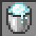
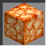
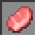
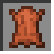
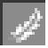
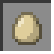

Terracotta Golem
Herder
The Terracotta Golem is the herder. It shears sheep, milks cows and looks after the animals in the pens near its chest.
Building a Terracotta Golem
Place the golem's body block, then put a carved pumpkin or jack o'lantern on top. The pumpkin is consumed, the body block becomes the golem's chest, and the golem stands on it. You do not need a chest first: the pattern makes one. The golem is bound to that chest and starts dormant.
The chest is also craftable, so you can move or replace it. It has 27 slots and never joins into a double chest.


Waking it up
A golem starts dormant: head hanging, standing still, holding out the thing it wants in its off hand. Right-click it with that item to give it an offering. Each offering is worth 45 minutes of work and it stores at most two (90 minutes). It then asks for something different, so no single item will do. The clock runs only while the golem is loaded and has a job site.
These are the eight items it can ask for: hover over a slot for its name. They are deliberately unrelated to its job, so keeping a large operation going means going out exploring.
 Turtle ScuteFound: baby turtles
Turtle ScuteFound: baby turtles Sea PickleFound: warm oceans
Sea PickleFound: warm oceans Cocoa BeansFound: jungles
Cocoa BeansFound: jungles Mangrove PropaguleFound: mangrove swamps
Mangrove PropaguleFound: mangrove swamps
Powder Snow BucketFound: powder snow Any pottery sherdFound: archaeology: any sherd works
Any pottery sherdFound: archaeology: any sherd works
ShroomlightFound: the Nether Big DripleafFound: lush caves
Big DripleafFound: lush cavesWhat it does
- It works the enclosed pens (up to 64 floor blocks) with animals in them within 16 blocks of its chest. A pen with a gap in the fence is not a pen.
- It shears sheep and milks cows (a cow can be milked about every five minutes), turning each bucket from the chest into a bucket of milk.
- It keeps herds to a sensible size: it breeds a pen that has more than four floor blocks per animal, using feed from the chest, and culls one that is crowded below 3.5. It never culls a species below two adults.
- Wool, milk, meat, leather, feathers and eggs go to the chest.
Like every golem it carries one stack at a time: it has no inventory, picks things up in its hand, takes them to its chest and goes back for the next. With a stack already in hand it first gathers more of the same item, up to a full stack, so it makes fewer trips. Supplies come out of the chest the same way.
It produces
 Wool
Wool Milk Bucket
Milk Bucket Raw Beef
Raw Beef
Raw Porkchop Raw Chicken
Raw Chicken Raw Mutton
Raw Mutton
Leather
Feather
EggIt uses

Notes
- Give it plenty of feed and buckets: without feed it cannot breed, without buckets it cannot milk.
- A golem prefers its own chest to any other chest nearby.